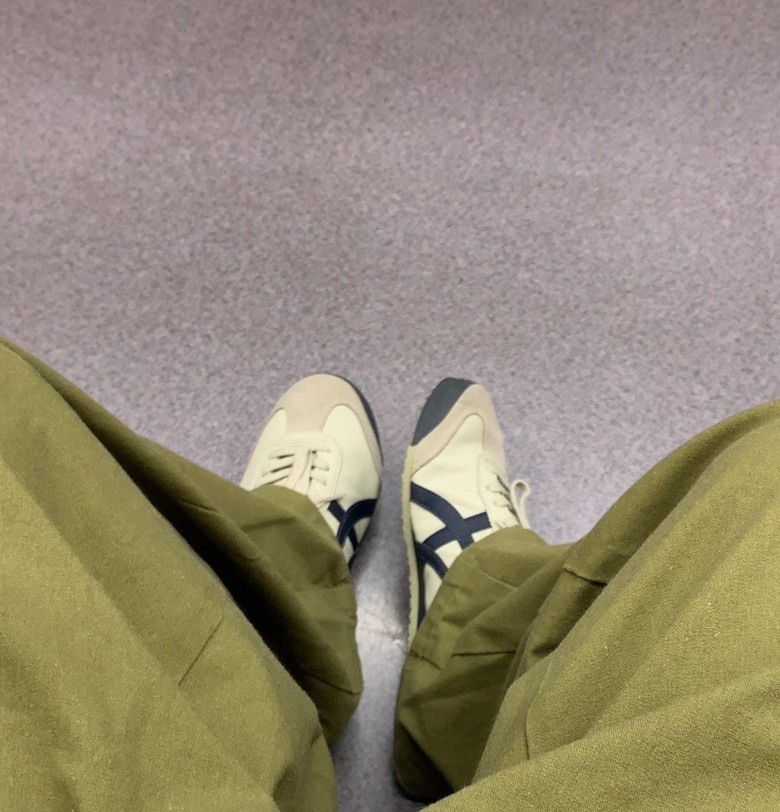

A Look into My Digital Journey
About Me

三浦 碧生
東京のCS専攻大学生。大学2年生の秋からWeb開発の基礎を学び始め、バックエンド領域に特に興味があります。
現在はPHPやLaravelを用いたフルスタックアプリ開発を学習中。また、領域に囚われずモダンな技術にも精通していきたいです。
将来的には、実務経験やチーム開発を通して多様なプロジェクトに携わりたいと考えています。
- GitHub:
https://github.com/Aoi3uProjects
Skills
HTML
CSS (BootStrap/tailwindcss)
JavaScript
PHP
Laravel
Git/GitHub